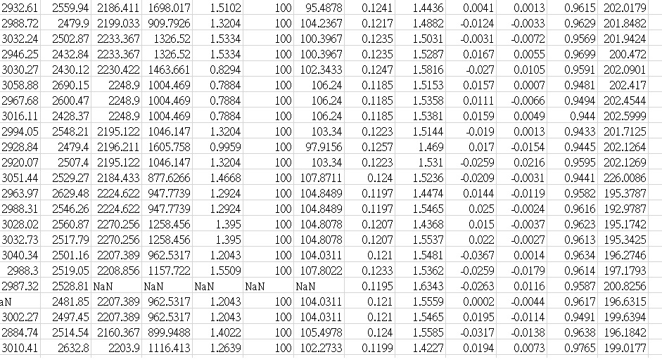
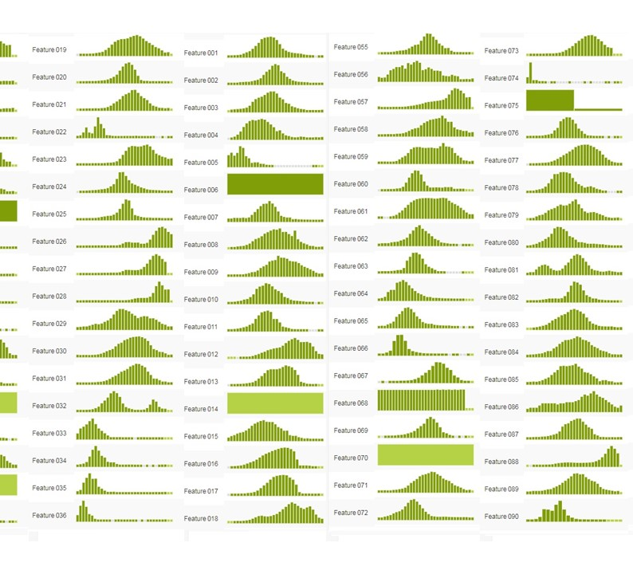

SECOM Dataset: 1567 examples , 591 features , 104 fails
Key facts: Data Structure: The data consists of 2 files the dataset file SECOM consisting of 1567 examples each with 591 features a 1567 x 591 matrix and a labels file containing the classifications and date time stamp for each example. As with any real life data situations this data contains null values varying in intensity depending on the individuals features. This needs to be taken into consideration when investigating the data either through pre-processing or within the technique applied. The data is represented in a raw text file each line representing an individual example and the features seperated by spaces. The null values are represented by the 'NaN' value as per MatLab.
